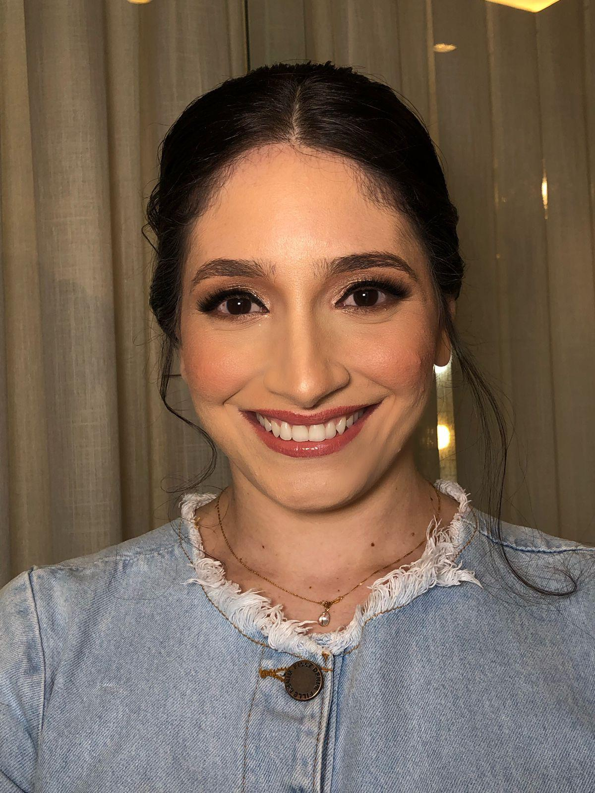

TecnoLógica
Sobre
Conheça mais sobre a autora e o projeto
Vitória Lima
Estudante de Análise e Desenvolvimento de Sistemas, em transição para a área de tecnologia, com interesse em desenvolvimento web, projetos criativos e construção de soluções digitais.
Quem sou eu
Meu nome é Vitória Lima. Sou formada em Biologia pela UEPB, tenho trajetória acadêmica em Biotecnologia pela UFPB e atualmente curso Análise e Desenvolvimento de Sistemas pela UNINTER. Estou em transição para a área de tecnologia, com grande interesse em desenvolvimento web, programação e criação de projetos que unam aprendizado, organização e criatividade.
Habilidades
Tecnologias que estou estudando
Conecte-se comigo
Sobre o site
O TecnoLógica foi criado como um projeto de estudo e prática em HTML e CSS, com o objetivo de desenvolver habilidades em estruturação de páginas, estilização visual e organização de conteúdo. Ao mesmo tempo, o site também funciona como um espaço para compartilhar temas relevantes da área da tecnologia de forma clara, moderna e acessível.
Objetivo do projeto
Este projeto foi desenvolvido para fortalecer minha base no desenvolvimento front-end, colocar em prática conceitos fundamentais da web e construir um portfólio cada vez mais sólido. Mais do que um exercício, o TecnoLógica representa minha evolução na área de tecnologia e meu compromisso com o aprendizado contínuo.
Visão para o futuro
Minha intenção é continuar aprimorando este site com novas páginas, melhorias visuais, conteúdos informativos e recursos mais completos, tornando-o cada vez mais profissional. Este projeto faz parte da minha caminhada de transição de carreira e da construção de uma nova trajetória na tecnologia.
← Voltar para a página inicial